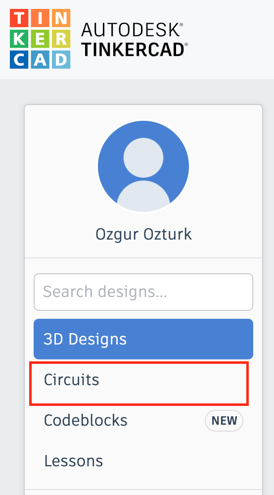
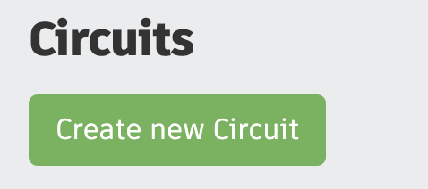
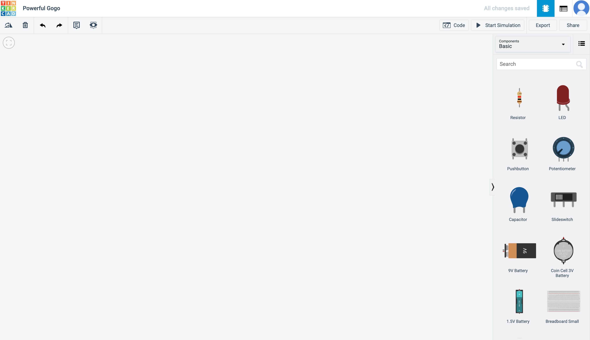
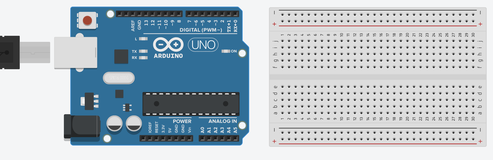
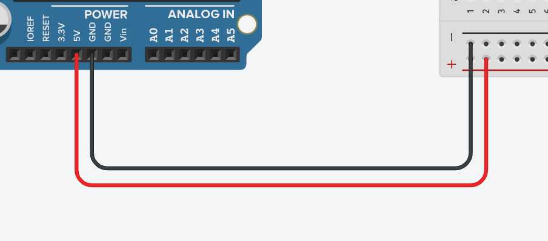
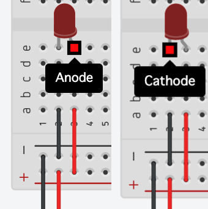
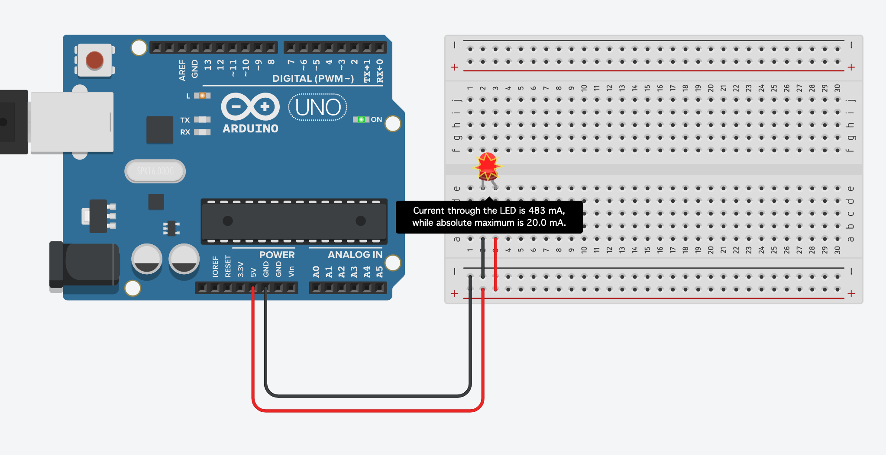
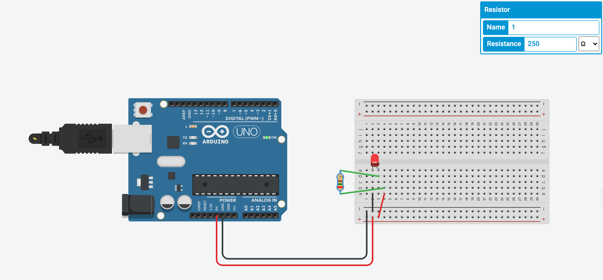
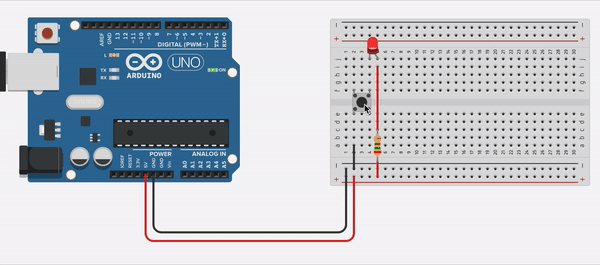

10.1 Learning Circuit Components
Initially, I learned that I can create circuits using Tinkercad. For this I go to the Tinkercad website and loging. after loging in, instead of going to the "3D Designs" tab I click to "Circuits" tab.
After heading in to the "circuits" tab, I create a new circuit design by clicking "Create New Circuit."
I am welcomed with a blank whiteboard. On the right corner I have access to different electrical components.
I seleect one "Arduino Uno R3" and a "Breadboard." In this case I will be using Arduino Uno as my power source and I will be using the breadboard to create my circuit. Breadbord is part that allows us to connect different electrical components. It allows this by having a selected path of wires inside it (horizontal and vertical). The ones that are labeled - and + are horizontally connected and between them, the rest is connected vertically as columns where there are two rows: top and bottom.
Now, I can place my components on the breadboard. However, first I need to connect the arduino to the breadboard. For this I use two wires (black and red). Using the red wire I connect the "5V" pin on Arduino to the "+" sign on the breadboard and using the black wire I connect the Ground "GND" to "-" sign on the breadboard.
Now that I have connected the power to the breadboard, I can finally place my components. Initially I create a simple circuit with one LED. However, LED stands for Light-emitting diode and diodes only allows electricity to flow in one direction. This means I have to make sure that the signs are correctly aligned. For this I allign the Anode with positive and Cathode with negative sign.
However, if I go and run this circuit it will blow up the LED and it will give a notification explaining why it blew up.
It says that the current flowing is higher than the maximum current this LED can withhold. But it gives the maximum value this LED can withhold and using that we can calculate the necessary resistance in the circuit which comes out around 250 Ohms. By puting the resistor there every thing starts working.
Now, I will be using a "PushButton" component to make a circuit where by pressing the button the circuit is complete and the LED lights up.
Finally, I learned about Potentiometers. These can be used as variable resistors. This means that instead of using a resistor with one specific value of resistance, you will be able to change the resistance in the circuit by changing the value on a potentiometer. For demonstrating this I have created a circuit with a potentiometer and another resistor with 250 ohms resistance to block the user from blowing up the LED. In the image below, you can see that increasing the value on the potentiometer increases the resistance thus decreases teh current going through the LED which dims the light of the LED.